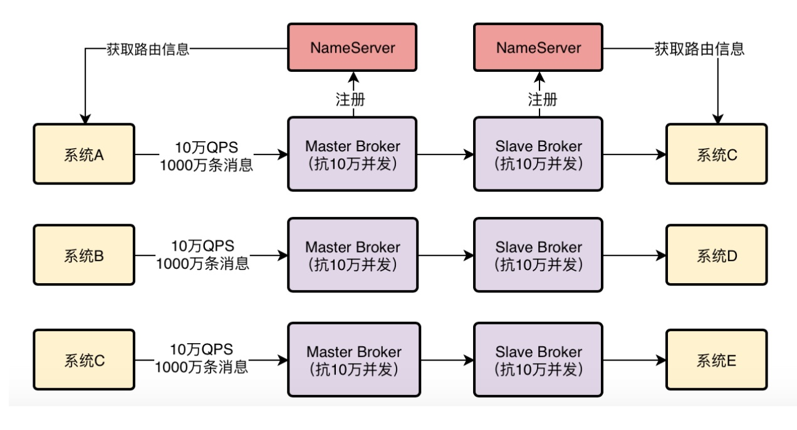
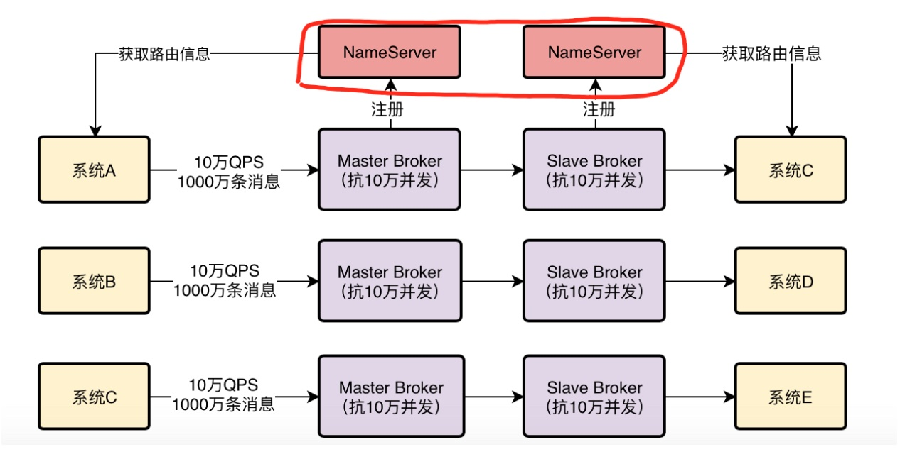
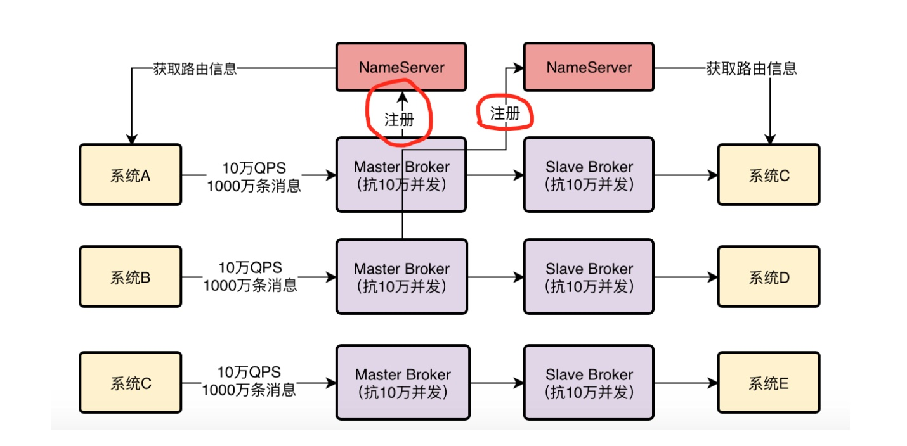
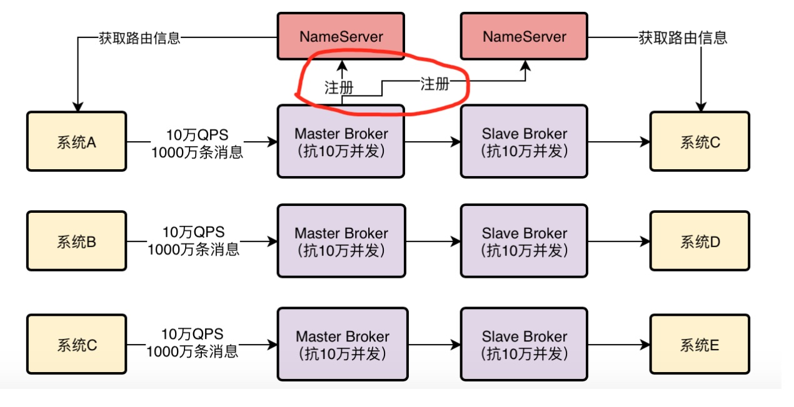
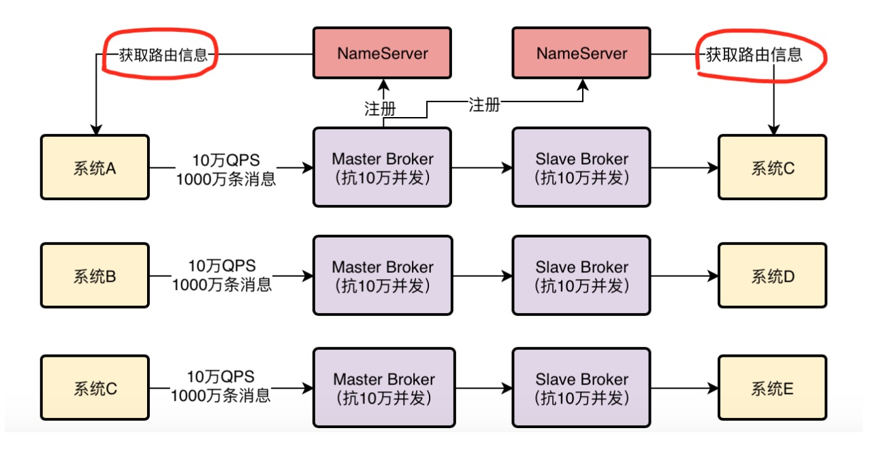
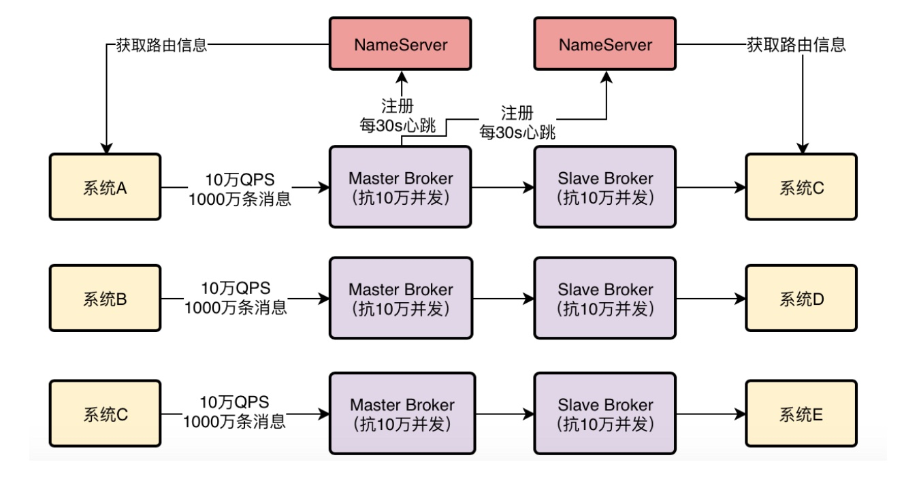
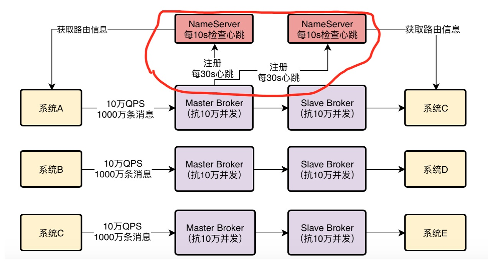
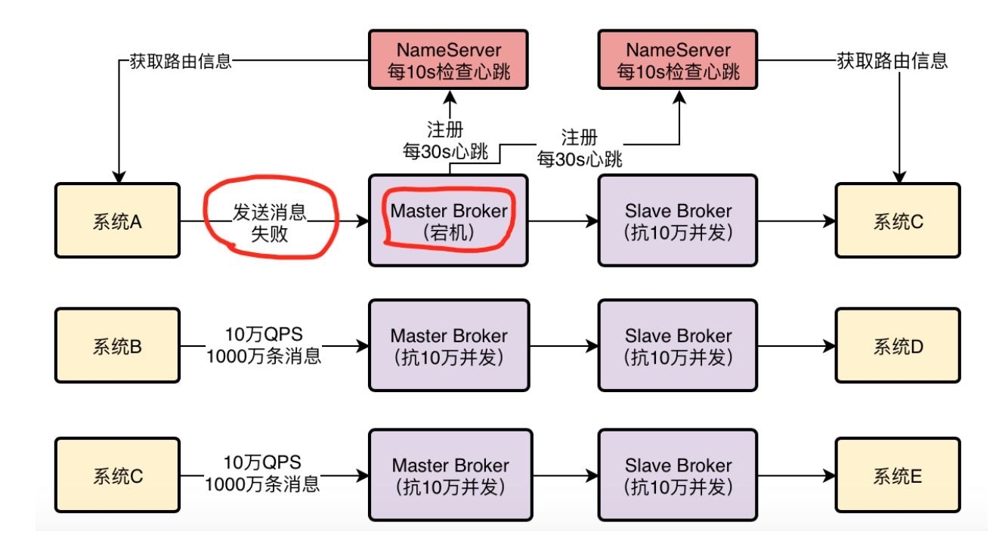

1、小猛的RocketMQ研究之路
上回给同事们分享了RocketMQ的基本架构后，大家都希望小猛多研究研究RocketMQ的原理，因为上次仅仅了解了一些基本原理，还远远不能让大家满足，很多细节都存在各种各样的疑问。
所以小猛发现，自己真是被明哥推到了一个坑里，这哪是简单的做一下调研和分享，明明就是让他来负责团队里至关重要的RocketMQ技术啊！
不仅要研究透彻一个技术，还要给大家做大量分享，保证团队能够成功的将MQ技术运用到订单系统架构里去，这真是一个长期而且艰巨的任务！
不过小猛转念一想，其实这也是明哥给自己的一个机会，毕竟不是每个新人都能这么好运，一进公司就担负起这种核心技术任务的。那既然如此，干脆就借着这个机会深入的研究一下RocketMQ，边研究边想办法把技术落地去实践。
初生牛犊不怕虎，说干就干，小猛的RocketMQ研究之路就这样开始了。。。
2、研究RocketMQ的一个切入点
首先，小猛思考了一下，研究RocketMQ应该从哪个点来切入呢？
他回忆了一下之前自己PPT里做的一个RocketMQ整体架构图。

他仔细想了一下，其实RocketMQ这个技术一共是包含了四个核心的部分：
第一块就是他的NameServer，这个东西很重要，他要负责去管理集群里所有Broker的信息，让使用MQ的系统可以通过他感知到集群里有哪些Broker。
第二块就是Broker集群本身了，必须得在多台机器上部署这么一个集群，而且还得用主从架构实现数据多副本存储和高可用。
第三块就是向MQ发送消息的那些系统了，这些系统一般称之为生产者，这里也有很多细节是值得深究的，因为这些生产者到底是如何从NameServer拉取路由信息的？如何选择Broker机器建立连接以及发送消息的？
第四块就是从MQ获取消息的那些系统，这些系统一般称之为消费者。
仔细想想消费者里其实也隐藏了很多的技术细节，比如到底是Broker主动推送消息给消费者？还是消费者自己从Broke里拉取消息？这些也都很值得深究。
那么到底从哪儿入手开始呢？因为自己的思路是边研究边落地，最好是初步搞清楚一些RocketMQ的架构设计细节，然后就申请一些机器开始落地部署了，可以测试测试，然后尝试让一些生产系统开始使用他。
此时小猛的目光放到了NameServer上，他觉得NameServer正是研究RocketMQ必须优先选择的一个切入点，因为没有NameServer，一切都无从谈起，可以说这是RocketMQ运行的起点。
好，那么就从NameServer开始研究，然后再给大家做一次分享！
3、一次关于RocketMQ NameServer设计原理的技术分享
小猛花了几天的时间对RocketMQ的NameServer进行了一些研究，得出了很多的心得，对NameServer的设计理念和一些细节真的有了更深一步的认识。
因此他用心做了一份技术分享PPT，然后召集了团队里的小伙伴，又做了一次关于NameServer的技术分享。
会议室里，大家伙刚坐下，就有不少人对小猛有点意见了。有人说，小猛，你怎么搞的，分享也不搞点干货，我们都想看看Broker的一些底层原理，比如数据是怎么存储的，怎么写入磁盘的 ，中间有没有缓冲层的设计之类的。
小猛尴尬的说，大家别着急啊，我其实也想到了RocketMQ底层那些特别牛X的技术实现细节，但是想来想去，还是觉得应该从NameServer先开始，因为这个是RocketMQ的起点啊，没有他，RocketMQ怎么运行呢？
大家伙一听，觉得还挺对的，那好，耐心听小猛来讲吧。
4、NameServer到底可以部署几台机器？
小猛此时先切入了第一个问题，大家想想，要部署RocketMQ，就得先部署NameServer，那么这个NameServer到底可以部署几台机器呢？
是一台机器？还是可以部署多台机器？如果部署多台机器，他们之间是怎么协同工作的？
大家面面相觑，没人说出个所以然来，都催促小猛别卖关子，赶紧继续讲，尽量30分钟内搞定分享，大家还得各回各工位，各找各自的产品经理继续撕需求和写代码呢！
小猛脑门黑线了一下，心想自己本来还想跟大家互动一下，结果大家这么猴急，那好，别啰嗦了，直接一鼓作气讲完吧！
NameServer，首先是支持部署多台机器的。也就是说，NameServer是可以集群化部署的，大家回头看看我之前做的PPT里的图，小猛打开一张图，里面画了一个红圈。

在当时的图里就是画了多台NameServer机器的，只不过上次分享没提到了NameServer集群部署这个话题。
那为什么NameServer要集群化部署？
最主要的一个原因，就是高可用性。
因为大家都知道，NameServer是集群里非常关键的一个角色，他要管理Broker信息，别人都要通过他才知道跟哪个Broker通信，所以没了他就会很麻烦！
那么如果NameServer就部署一台机器的话，一旦NameServer宕机了，岂不是会导致RocketMQ集群出现故障？
所以通常来说，NameServer一定会多机器部署，实现一个集群，起到高可用的效果，保证任何一台机器宕机，其他机器上的NameServer可以继续对外提供服务！
5、Broker是把自己的信息注册到哪个NameServer上去？
下一个问题：Broker在启动的时候是把自己的信息注册到哪个NameServer上去的？
有的人可能会猜测，是不是这样，比如一共有10台Broker机器，2个NameServer机器，然后其中5台Broker会把自己的信息注册到1个NameServer上去，另外5台Broker会把自己的信息注册到另外1个NameServer上去。
小猛这时打开了一个这种猜想的示意图，在这个图里，两个Master Broker分别注册到了不同的NameServer上去。如下图所示：

那么到底是不是这样呢？
答案是：不对
这样搞有一个最大的问题，如果1台NameServer上有5个Broker的信息，另外1个NameServer上有另外5个Broker的信息，那么此时任何一个NameServer宕机了，不就导致5个Broker的信息就没了吗？
所以这种做法是不靠谱的，会导致数据丢失，系统不可用。
因此正确答案是：每个Broker启动都得向所有的NameServer进行注册
也就是说，每个NameServer都会有一份集群中所有Broker的信息。
小猛接着打开了下一张图。

在这个图里就示范了一个Master Broker得向两台NameServer都进行注册的情况，这才是真正的情况。
6、系统如何从NameServer获取Broker信息？
下一个问题：扮演生产者和消费者的系统们，如何从NameServer那儿获取到集群的Broker信息呢？
他们需要知道集群里有哪些Broker，才能根据一定的算法挑选一个Broker去发送消息或者获取消息。
有两种办法：
第一种办法是这样，NameServer那儿会主动发送请求给所有的系统，告诉他们Broker信息。
这种办法靠谱吗？明显不靠谱，因为NameServer怎么知道要推送Broker信息给哪些系统？未卜先知吗？
第二种办法是这样的，每个系统自己每隔一段时间，定时发送请求到NameServer去拉取最新的集群Broker信息。
这个办法是靠谱的，没有什么明显的缺陷，所以RocketMQ中的生产者和消费者就是这样，自己主动去NameServer拉取Broker信息的。
小猛接着打开了一张图。

顺便在这里解释一下，图里的路由信息，大致可以理解为集群里的Broker信息以及其他相关的数据信息
通过这些路由信息，每个系统就知道发送消息或者获取消息去哪台Broker上去进行了，这起到一个把消息路由到一个Broker上的效果，所以一般我们把这种信息叫做路由信息。
7、如果Broker挂了，NameServer是怎么感知到的？
下一个问题，现在一个Broker启动之后向NameServer注册了，每个NameServer都知道集群里有这么一台Broker的存在了，然后各个系统从NameServer那儿也拉取到了Broker信息，也知道集群里有这么一台Broker
但是如果之后这台Broker挂了呢？
要解决这个问题，靠的是Broker跟NameServer之间的心跳机制，Broker会每隔30s给所有的NameServer发送心跳，告诉每个NameServer自己目前还活着。
小猛说着，打开了一个图，在里面有一个心跳的概念。

每次NameServer收到一个Broker的心跳，就可以更新一下他的最近一次心跳的时间
然后NameServer会每隔10s运行一个任务，去检查一下各个Broker的最近一次心跳时间，如果某个Broker超过120s都没发送心跳了，那么就认为这个Broker已经挂掉了。
小猛说着又打开了一张图。

8、Broker挂了，系统是怎么感知到的？
下一个问题，如果Broker挂掉了，那么作为生产者和消费者的系统是怎么感知到的呢？难道必须得NameServer发送请求给所有的系统通知他们吗？
这个是不现实的，之前已经说过了，NameServer去发送这个东西非常的不靠谱。
但是如果NameServer没有及时通知给那些系统，那么有没有可能出现这样一种情况，刚开始集群里有10个Broker，各个系统从NameServer那里得知，都以为有10个Broker。
结果此时突然挂了一个Broker，120s没发心跳给NameServer，NameServer是知道现在只有9个Broker了。
但是此时其他系统是不知道只有9个Broker的，还以为有10个Broker，此时可能某个系统就会发送消息到那个已经挂掉的Broker上去，此时是绝对不可能成功发送消息的
小猛说着打开了一张图。

针对这个情况怎么办？这个问题要我们以后去分析生产者原理的时候才会具体说他的细节，现在简单先提一下思路。
大家可以想一下，如果确实是那个情况，可以有两种解决办法。
首先，你可以考虑不发送消息到那台Broker，改成发到其他Broker上去。
其次，假设你必须要发送消息给那台Broker，那么他挂了，他的Slave机器是一个备份，可以继续使用，你是不是可以考虑等一会儿去跟他的Slave进行通信？
总之，这些都是思路，但是现在我们先知道，对于生产者而言，他是有一套容错机制的，即使一下子没感知到某个Broker挂了，他可以有别的方案去应对。
而且过一会儿，系统又会重新从NameServer拉取最新的路由信息了，此时就会知道有一个Broker已经宕机了。
OK！今天的技术分享就到这里了，这就是NameServer的核心工作原理。
大家最主要是知道他的集群化部署、Broker会注册到所有NameServer去、30s心跳机制和120s故障感知机制、生产者和消费者的客户端容错机制，这些是最核心的。
大家听完了小猛的分享之后，不禁一起鼓掌，都觉得小猛研究的确实不错，说的通俗易懂，而且让每个人对NameServer的理解都更深入了。